During HSN continuation, only one bifurcation is tested for, namely the non-central
homoclinic-to-saddle-node orbit or NCH. This orbit forms the transition between HHS
and HSN curves. The strategy
used for detection is taken from HomCont [5].
During HHS continuation, all bifurcations detected in HomCont are also detected
in our implementation. For this, mostly test functions from [5] are used.
Suppose that the eigenvalues of
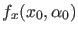 can be ordered according to
where 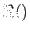 stands for 'real part of', 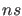 is the number of stable, and 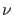 the number of unstable eigenvalues.
The test functions for the bifurcations are
- Neutral saddle, saddle-focus or bi-focus
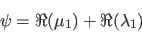
If both 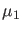 and 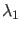 are real, then it is a neutral saddle, if one is real and one consists of a pair of complex conjugates, the bifurcation is a saddle-focus, and it is a bi-focus when both eigenvalues consist of a pair of complex conjugates.
- Double real stable leading eigenvalue
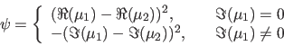
- Double real unstable leading eigenvalue
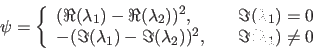
- Neutrally-divergent saddle-focus (stable)
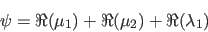
- Neutrally-divergent saddle-focus (unstable)
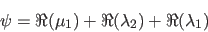
- Three leading eigenvalues (stable)
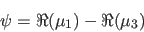
- Three leading eigenvalues (unstable)
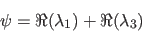
- Non-central homoclinic-to-saddle-node
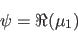
- Shil'nikov-Hopf
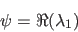
- Bogdanov-Takens point
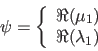
For orbit- and inclination-flip bifurcations, we assume the same ordering of the eigenvalues of
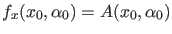 as shown in (95), but also that the leading eigenvalues and are unique and real:
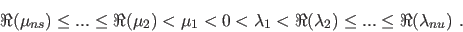
Then it is possible to choose normalised eigenvectors 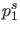 and 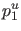 of
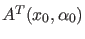 and 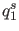 and 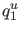 of
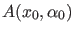 depending smoothly on
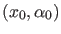, which satisfy
| 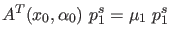 |
 |
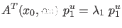 |
|
| 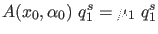 |
|
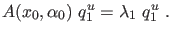 |
|
The test functions for the orbit-flip bifurcations are then:
- Orbit-flip with respect to the stable manifold
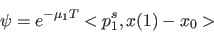
- Orbit-flip with respect to the unstable manifold
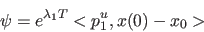
For the inclination-flip bifurcations, in [5] the following test functions are introduced:
- Inclination-flip with respect to the stable manifold
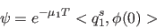
- Inclination-flip with respect to the unstable manifold
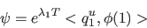
where  (
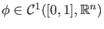) is the solution to the adjoint system, which can be written as
(
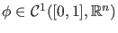) is the solution to the adjoint system, which can be written as
where 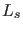 and 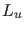 are matrices whose columns form bases for the stable and unstable eigenspaces of
, respectively, and the last condition selects one solution out of the family 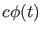 for
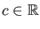. is equivalent to 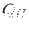 from the mathematical definition of the system, and to 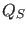. In the homoclinic defining system the orthogonal complements of and are used; in the adjoint system for the inclination-flip bifurcation, we use the matrices themselves (or at least, their transposed versions).